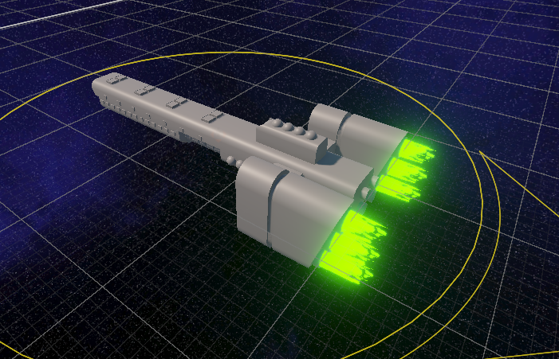
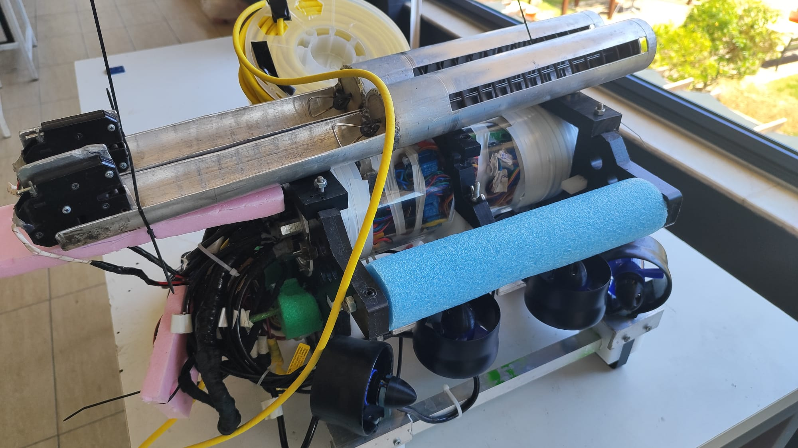

Portfolio

Project DNG
A Space-Strategy RPG Game I'm developing independently, planned for release on Steam. Built in Unity, with gameplay systems, level design and 3D art all handled by me.
This is my main project. I really like Space & Sci-Fi themes. So that's why i am making this game.

Knot Game Engine (KGE)
Knot is a Game Engine that i am building from scratch in C++ with the Vulkan graphics API. The focus is on a clean renderer architecture and modern GPU workflows.
Along the way I've been working on rendering systems, shaders (HLSL), and the core engine subsystems.
Project Fabula
A multiplayer VR game I contributed to at Wide Game Studio. I worked on the state machine and mob behaviour, and built an admin & moderation system and POI.
We used Photon Fusion 2 for Networking and the codebase that i wrote is followed maintainability and SOLID principles. This game is released on Meta Quest Store as Early Access.
Small & Jam Games
A collection of small games built during Jam events and on my free times. Some of them released on Itch.io.
I handled both the programming in Unity and the 3D art in Blender.

Teknofest ROV (G-ROV)
An autonomous underwater ROV built with a team for Teknofest 2024, Turkey's largest technology competition — where we reached the finals.
I worked as a software engineer on the AI side: training and implementing the machine-learning models and developing the image-processing systems for autonomous navigation.